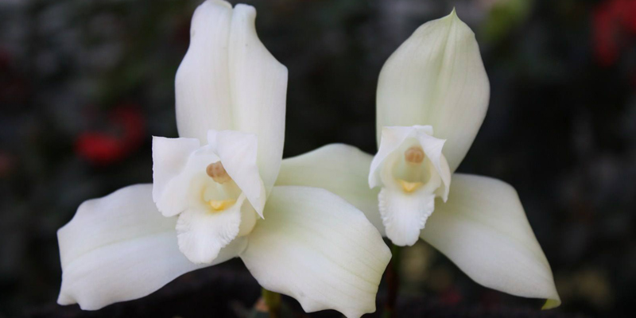
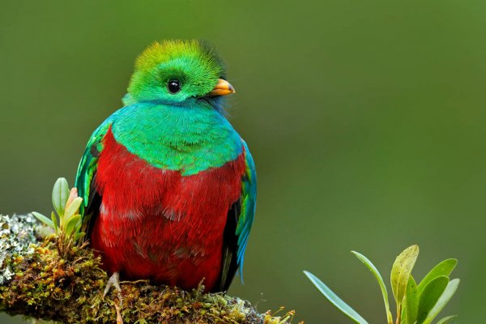
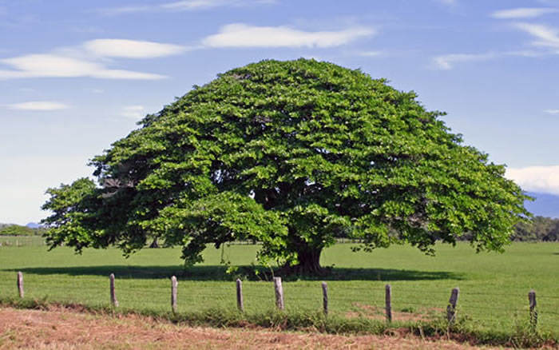
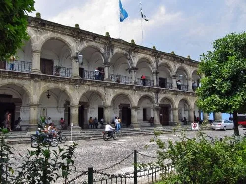
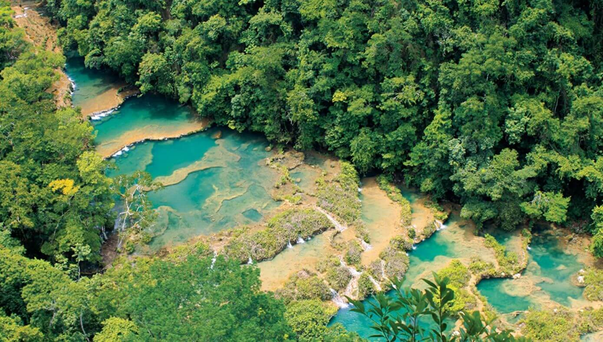

|
Historia
|
La historia de Guatemala es la cronología de sucesos acaecidos desde el comienzo del primigenio poblamiento humano en el actual territorio de la República de Guatemala hasta nuestros días. Esta comienza con los primeros grupos de personas en habitar la región, de las que se destaca la civilización maya. |
|
Simbolos
|
| Bandera Nacional |
Flor Nacional |
Ave Nacional |
Árbol Nacional |

|

|

|

|
| Bandera de Guatemala |
La monja Blanca |
El quetzal |
la Ceiba |
|
|
Extensión Territorial
|
108,889 km2
|
|
Departamentos
|
- Alta Verapaz
- Baja Verapaz
- Chimaltenago
- Chiquimula
- Guatemala
- El Progreso
- Escuintla
- Huehuetenango
- Izabal
- Jalapa
- Jutiapa
- Petén
- Quetzaltenango
- Quiché
- Retalhuleu
- Sacatepequez
- San Marcos
- Santa Rosa
- Sololá
- Suchitepequez
- Totonicapán
- Zacapa
|
|
Lugares Turisticos
|
| Antigua Guatemala |
Semuc Champey |
|

|

|
|